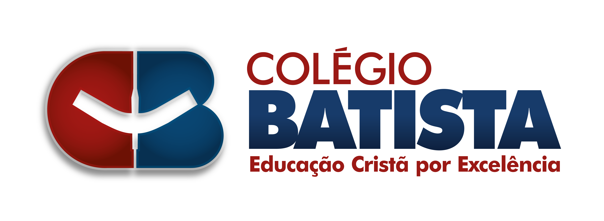
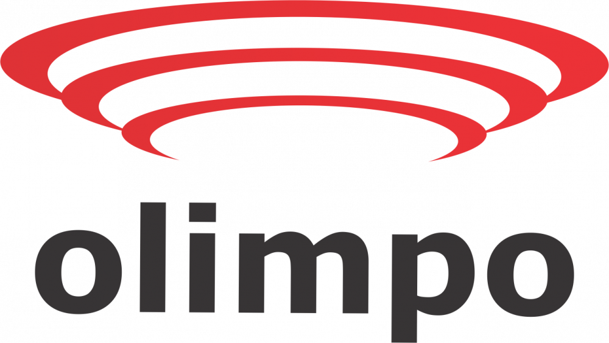
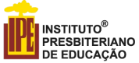
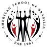
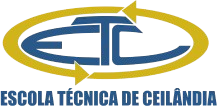

Onde já atuamos?





Quem somos nós?
Saiba mais sobre a startup brasileira e seus fundadores.
Somos a startup brasileira que ajuda escolas e educadores a preparar aulas mais tecnológicas, criativas e engajadoras! Para enfrentar os desafios educacionais do século XXI, desenvolvemos um método de ensinar que usa Robótica, Movimento Maker, Metodologias Ativas e Plataformas Digitais como poderosas ferramentas pedagógicas.
Nosso foco está no trabalho com educadores e instituições de ensino que desejam inovar. Por isso, oferecemos capacitações online, ferramentas de ensino de programação, mentorias e cursos de Educação Tecnológica para todo o Brasil!